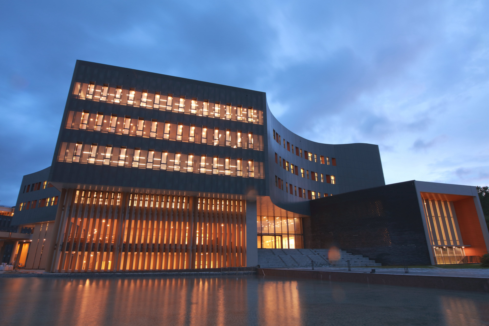

A Royal Charter dated 29 February 1796 ordered the creation of a Royal Public Library of the Court – the BNP’s oldest formal ancestor. The original institution’s first collection was the Library of the Royal Board of Censorship, which had itself been founded in 1768. The Charter stipulated that the new institution should be a Public Library, to be installed in the Western Tower of the Praça do Comércio (Terreiro do Paço).
During the first phase of its life, the Royal Library not only received funds from the royal purse, but also private donations and the works to which it was entitled under the first legal deposit law (1805), which extended the obligation to deposit a copy of everything they printed to all the country’s printing offices.
In the wake of the victory of the Liberals and the abolition of the religious orders (1834), the institution was renamed the National Library of Lisbon and was officially entrusted with all or part of the libraries of numerous monasteries and convents. The arrival of these large collections made it absolutely necessary to move to larger premises, and the choice fell on the Convento de São Francisco.
Over the more than 130 years in which it operated in the Chiado area of the city, the BNL experienced periods of modernisation and enrichment and times of greyness and lethargy. We should particularly note the efforts that were made in the 19th century to absorb the collections of the abolished religious establishments, organise bibliographic exhibitions and publish catalogues of a variety of collections.
The proclamation of the Republic (1910) was followed by the incorporation of a new wave of libraries from another round of abolitions of religious institutions. Between 1920 and 1926 the BNL enjoyed a phase in which it took a major step forward in the field of library and information science and benefited from a flourishing cultural life, all of which was promoted by the so-called “Library Group”.
The growth of the collections and the need for conditions suited to the conservation of the Library’s rich holdings made it indispensable to construct a purpose-designed building that would provide the largest Portuguese bibliographic collection with a proper home. Work began in 1958, to a design by the architect Porfírio Pardal Monteiro, and the Library was transferred to the new building in the Campo Grande area in 1969.
The process of computerising the Library began in the 1980’s, alongside a broader project intended to support all of Portugal’s libraries in this respect, which resulted in the creation of the National Bibliographic Database – PORBASE. At the same time as it adapted to the process of technological evolution, the Library continued to enrich its collections. Of particular significance was the creation of an Archive of Writers’ Personal Papers, but a number of major initiatives were also undertaken with regard to the standardisation of library and information techniques, preservation and conservation, and cultural activities.
At the beginning of this century the Library has been accompanying the international trend towards the digitisation of bibliographic collections. We created the National Digital Library (BND), which is constantly growing and works closely with other European institutions.
Already more than 200 years old, in 2007 the Institution was renamed the National Library of Portugal (BNP) and began a restructuring process that is seeking to help both enrich and publicise the nation’s bibliographic heritage, and to modernise, rationalise and improve its own operations in such a way as to serve the public, the professional community, and publishers and booksellers